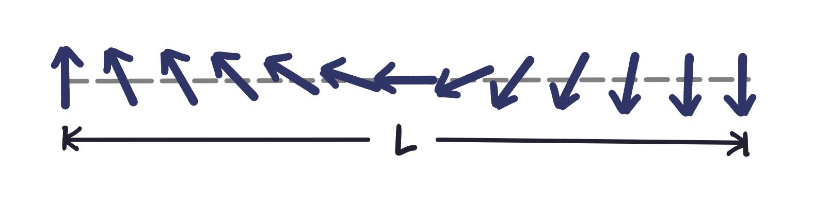
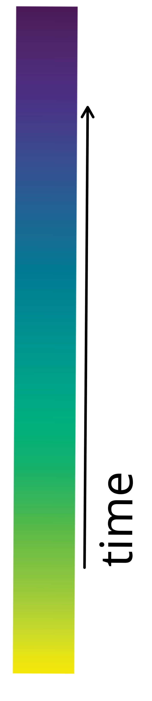

Seminar in Simulation and Computational Modelling I
Active Matter
Critical Phenomena in Far From Equilibrium Systems
Ana Bensabat Paulino
Ana Bensabat Paulino
Definition: systems in which individual constituents consume energy from their surroundings to generate motion and mechanical stress.
Key aspects:
Questions:
[1] Matthew Copeland, University of Wisconsin, Madison, https://www.youtube.com/watch?v=q27Jn3h4kpE
1
[2] Jan van IJken / www.janvanijken.com
2
[3]
[4]
Second-order phase transition?
[3] Vicsek et al. Phys. Rev. Lett. 75.1226 A (1995) [4] Dirk Brockmann, Complexity Explorables
3
Mermin-Wagner's Theorem [5]: A system in equilibrium cannot undergo continuous symmetry breaking in less than three dimensions.
Proof Idea:
Consider a phase with spontaneous magnetisation: \[\mathbf{s}=\left(\sqrt{1-\sum_\alpha\sigma_\alpha^2},\sigma_1,\cdots,\sigma_{N-1}\right), \quad |\sigma|\ll 1, \quad 1 \leq \alpha \leq N-1\] The reduced hamiltonian is: \[H = - \frac{1}{2} \sum_{r,r'}J(r-r')\mathbf{s}({r})\cdot \mathbf{s}({r}')\quad \xrightarrow[\text{long-wavelength fluctuation}]{\text{continuum limit}}\quad H = \text{const} + \frac{K}{2}\int \sum_\alpha (\nabla \sigma_\alpha)^2 d^dr\] The first order correction to the spontaneous magnetisation is given by: \[\langle \sigma_\alpha(r_1)\sigma_\alpha(r_2)\rangle=\frac{1}{K}\int_{BZ}\frac{e^{ik(r_1-r_2)}}{k^2}\frac{d^dk}{(2\pi)^d} \quad \longrightarrow \quad \langle s_1 (r)\rangle =1-\frac{1}{2}\sum_\alpha \langle \sigma_\alpha(r)^2\rangle \sim 1- \int_{BZ}\frac{d^dk}{k^2}\] For long wavelengths, the integral two or less dimensions! The assumption of a an order phase in non-zero temperature is incorrect, hence, the system cannot undergo a continuous symmetry breaking in less than three dimensions.Energetic argument [6]:
If we form a domain of size l by forcing the spins near the middle to point in the opposite direction of those further away:  \[\begin{align} E&\sim L\frac{\pi^2}{L^2} && \implies E\sim L^{d-2} \end{align} \]In Vicsek's model the motion of the particles gives rise to effective long-range spatial interactions among the particles in the system and hence, long-range order, producing the phase transition.
[5] Mermin, N.D. and Wagner, H. Phys. Rev. Lett. 17.1133 [6] Cardy. J, Scaling and Renormalization in Statistical Physics
4
After Vicsek's findings, other authors came forward suggesting that the phase transition in the Vicsek model is actually first order (discontinuous).
The nature of the transition depends on the way the noise is introduced into the system:
[7]
\[G = 1-\frac{\langle\phi^4\rangle}{3\langle\phi^2\rangle^2}\]
[7]
[7] Gregoire G., Chat H. Phys. Rev. Lett. 92.025702
5
To ascertain the nature of the phase transition in the case of intrinsic noise, techniques used for equilibrium systems like finite-size scaling and short-time dynamic scaling (STD scaling) can be used [8]:

[8] G. Baglieto and G.V. Albano. Phys. Rev. E 78, 021125 (2008).
6
Brownian motion is the random motion of particles suspended in a fluid caused by the collisions of the particles with the atoms of the fluid. They key characteristics are:
It can be simply modelled by the Langevin Equation:
\[\gamma\dot{\mathbf{r}} = -\nabla U + \mathbf{\Gamma}(t)\] To make it active we add a force:
\[\gamma\dot{\mathbf{r}} = -\nabla U + \mathbf{F_a}+\mathbf{\Gamma}(t)\]7
8
[9]
General characteristics of 2D-ABP systems:
[10]
[9] Fily Y. and Cristina Marchetti M., Phys. Rev. Lett. 108, 235702 (2012)
[10] S. Redner G.
9
In 2018, Digregorio
[11] Digregorio P.
10
11